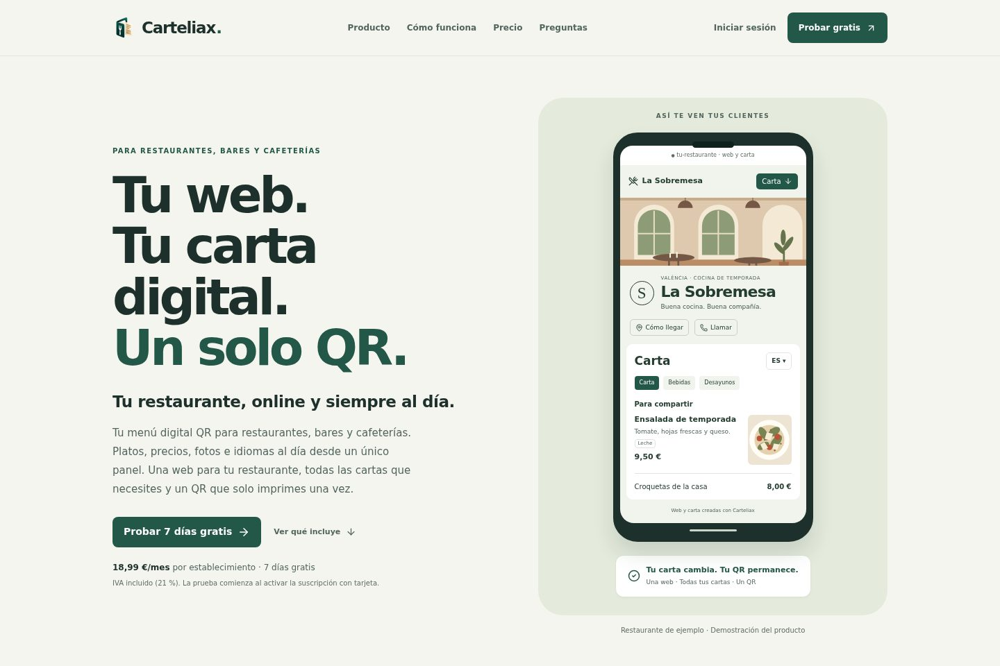
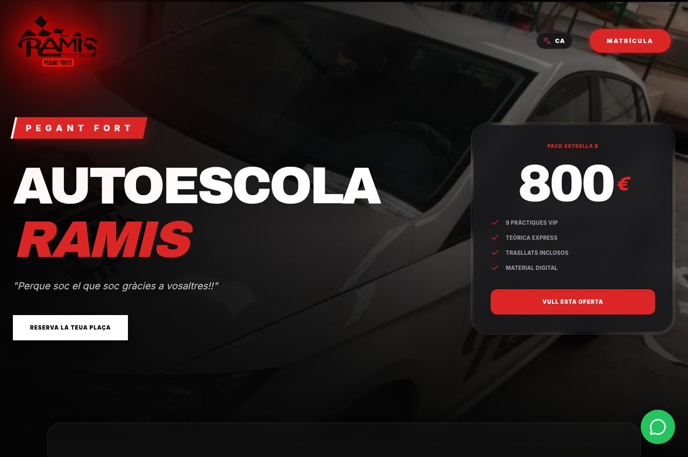
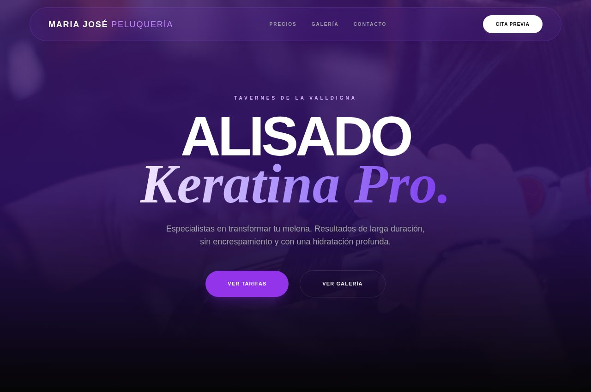
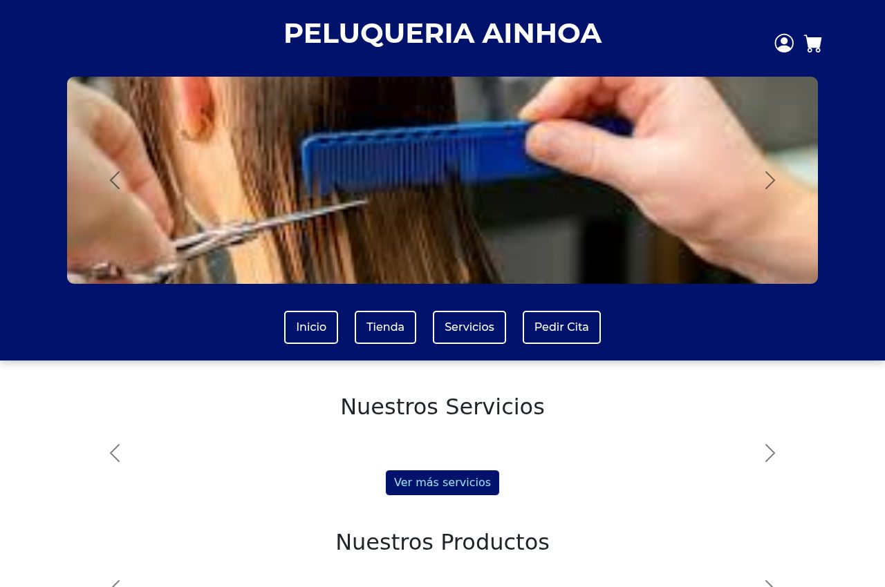
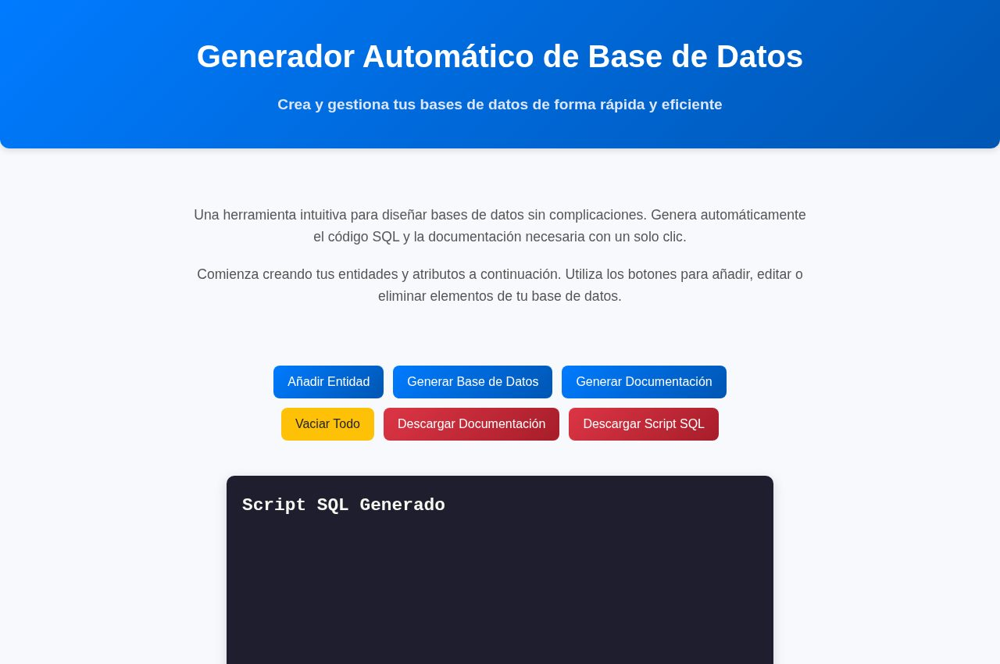
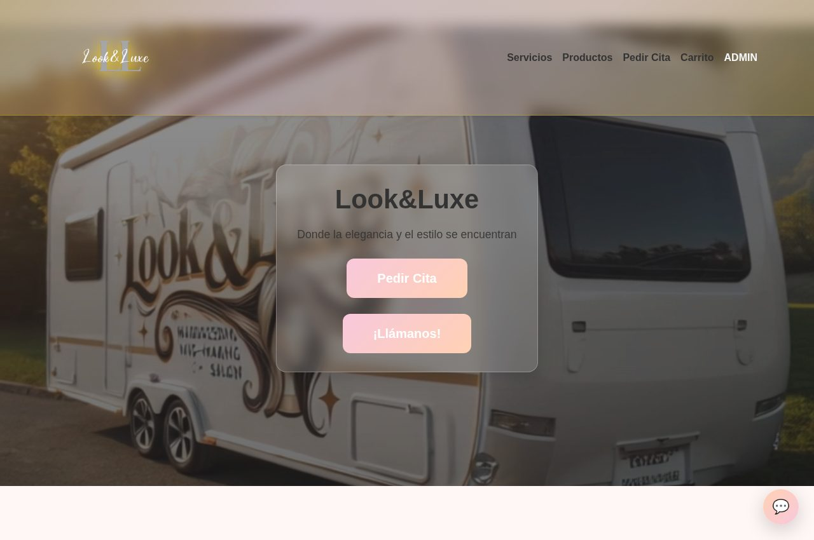
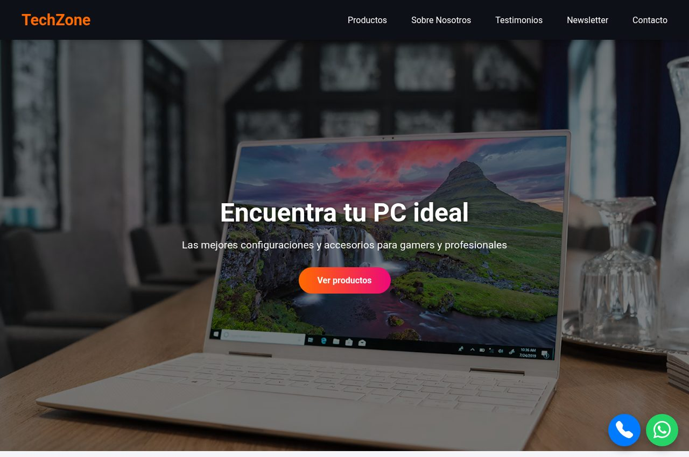
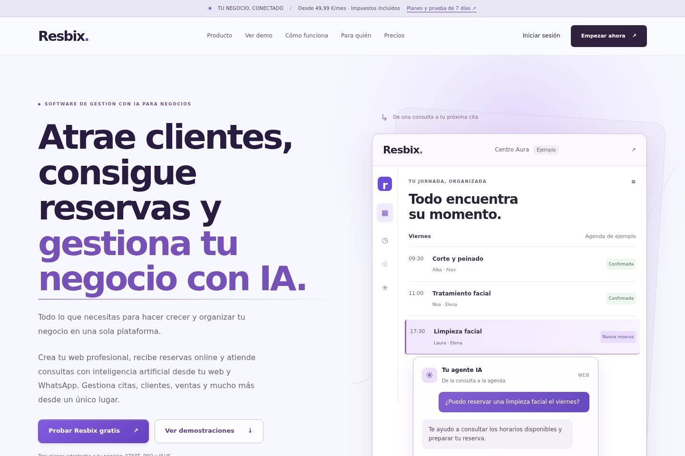

01 / FRONTENDInterfaces y aplicaciones
Vue.js · JavaScript · HTML · CSS · Tailwind
También Next.js, Flutter y conocimientos básicos de TypeScript y Nuxt.Como desarrollador Full Stack, construyo productos web completos: interfaces, APIs REST, bases de datos, autenticación, pagos e integraciones con IA.
Titulado en DAM y DAW. Experiencia en prácticas, webs para negocios y productos SaaS propios. Abierto a equipos de desarrollo y proyectos freelance.
LIVE DEVELOPER PROFILE
Soy Jordi Casanova, desarrollador Full Stack en Valencia, titulado en Desarrollo de Aplicaciones Web y Multiplataforma.
Mi trabajo conecta lo que se ve en pantalla con lo que ocurre detrás: interfaces, APIs REST, bases de datos, autenticación e integraciones. He pasado por prácticas en empresas, webs para negocios y el desarrollo de mis propios productos.
En 2026 he desarrollado y lanzado por mi cuenta Resbix y Carteliax. En ambos me he encargado del producto completo: desde la interfaz y el backend hasta los datos y la puesta en producción.
Busco aportar esa visión de conjunto a un equipo de desarrollo, y también colaborar en proyectos freelance con necesidades concretas.
01 / FRONTENDVue.js · JavaScript · HTML · CSS · Tailwind
También Next.js, Flutter y conocimientos básicos de TypeScript y Nuxt.02 / BACKENDNode.js · Express.js · PHP · Java · Spring Boot
APIs REST, autenticación e integraciones con IA y pagos.03 / DATA & DEPLOYPostgreSQL · Supabase · MongoDB · MySQL
SQL, RLS, Git, GitHub, Linux y Vercel. Docker: conocimientos básicos.// Explora el stack por áreas frontend: Vue.js, Next.js, Nuxt, JavaScript, TypeScript, Tailwind, Flutter backend: Node.js, Express, PHP, Spring Boot data: Supabase, PostgreSQL, MongoDB, MySQL infra: Git, GitHub, Linux, Vercel, Docker
Productos propios
SaaS · de la interfaz a la infraestructuraPlataforma SaaS de agentes de inteligencia artificial para negocios. Automatiza la atención al cliente, captura leads y gestiona reservas desde un único lugar.
Cartas digitales para restaurantes: categorías, productos, precios, disponibilidad y códigos QR. Panel de administración y pagos recurrentes con Stripe.
Una plataforma multi-tenant para gestionar imágenes, alérgenos, disponibilidad, idiomas y personalización visual, manteniendo un QR permanente.

menu → categorías → productosQR → carta digitaladmin → disponibilidadStripe → suscripcionesGeneración de presupuestos mediante texto o voz con IA, historial, autenticación y pagos.
De voz o texto a un presupuesto editable y exportable en PDF. Supabase para autenticación; Stripe para suscripciones.
“Instalación de 4 enchufes y revisión...”
Webs para negocios
Diseño, desarrollo y presencia digital
HTML · Tailwind · JavaScript · SEO

HTML · Tailwind · JavaScript
Más proyectos
Aplicaciones, herramientas y exploración
Gestión de productos, inventario, usuarios y funcionalidades de negocio.
MongoDB · Express · Vue · Node ↗
Generador de SQL y documentación automática para bases de datos.
JavaScript · SQL ↗
Concepto visual premium para un centro de estética.
Frontend · UI/UX ↗
Concepto de e-commerce para hardware y productos tecnológicos.
Frontend · Responsive ↗Aplicación multiplataforma para seguimiento de entrenamiento y progreso.
Flutter · App developmentUna aplicación de escritorio conectada a una API REST para usuarios, canciones y listas, con reproducción de audio en streaming.
desktop → API REST → PostgreSQL
usuarios / canciones / listas
audio → streamingProductos SaaS, proyectos para negocios y aplicaciones de formación: distintas formas de llevar el desarrollo a la práctica.
Explorar mi GitHub ↗Resbix y Carteliax son dos SaaS reales que he desarrollado y lanzado en solitario en 2026. Aquí explico el problema, mi aportación y las decisiones técnicas de cada uno.
Un agente de IA que conoce el contexto de cada negocio.
El reto va más allá de responder mensajes: cada empresa necesita gestionar sus propios clientes, reservas, servicios, empleados y configuraciones, con datos y funcionalidades separados.

Integrar un agente con Groq capaz de responder consultas, conocer los servicios y precios de cada empresa, consultar disponibilidad y gestionar reservas. Ese contexto cambia de un negocio a otro.
Mi aportación incluye la integración de IA y WhatsApp mediante Evolution API, la autenticación y el aislamiento de datos con Supabase, y un panel de gestión cuyas funcionalidades dependen del plan contratado.
Clientes, reservas, servicios, empleados y configuración propios dentro de una plataforma multi-tenant.
Groq para el agente, contexto del negocio y gestión de reservas; Evolution API para la integración con WhatsApp.
Supabase para autenticación y aislamiento de datos; Stripe y un panel con funcionalidades según el plan contratado.
La carta cambia. El QR permanece.
Restaurantes y bares necesitan crear y mantener sus cartas digitales sin conocimientos técnicos. El desafío es reunir toda esa gestión en un panel intuitivo y mantener estable el acceso público.
Diseñar un panel para administrar negocios, cartas, categorías y productos, manteniendo un código QR permanente aunque el contenido se modifique.
He desarrollado también la gestión de imágenes, alérgenos, disponibilidad, diferentes idiomas, plantillas y personalización visual dentro de una plataforma multi-tenant.
El QR conserva su destino mientras el negocio actualiza la carta; editar el contenido no exige reimprimirlo.
Negocios, cartas, categorías y productos organizados para que la gestión no requiera conocimientos técnicos.
Imágenes, alérgenos, disponibilidad e idiomas, junto con plantillas y personalización visual.
Si buscas un perfil que conecte interfaz, backend y datos, podemos hablar.
Formación técnica enfocada en desarrollo de software y sistemas.
Del mantenimiento de aplicaciones al desarrollo de productos completos: frontend, backend, datos e integraciones.
Español y valenciano: nativos.
Inglés: B1–B2 (nivel declarado en el CV).
feature / productsnov. 2025 — actualidadProyectos para negocios y productos propios. Tres sitios web remunerados; desarrollo de Resbix y Carteliax.
Requisitos, implementación, APIs, bases de datos, autenticación, pruebas y puesta en producción.
feature / webmar. — may. 2025Prácticas de desarrollo PHP / JavaScript. Aplicaciones con PHPRunner, nuevas funcionalidades y resolución de incidencias. Tablas, relaciones y consultas SQL con phpMyAdmin.
feature / wordpressmar. — may. 2024Prácticas de desarrollo web con WordPress y Elementor. Contact Form 7, BetterDocs, adaptación responsive y personalización de estilos y PHP.
feature / systemsmar. — jun. 2021Prácticas en el Ayuntamiento de Benifairó de la Valldigna: mantenimiento y configuración de equipos, sistemas operativos y documentación.
a91f2c2022—2025
IES Jaume II el Just · Tavernes de la Valldigna
COMPLETADO7bd0312022
Administración de Sistemas Informáticos en Red
c403ef2020—2022
Sistemas Microinformáticos y Redes
Puedo aportar desarrollo Full Stack a un equipo o construir una solución para tu negocio. El punto de partida siempre es entender qué necesita el producto.
01 / WEBWebs corporativas responsive, formularios y SEO local para presentar tu negocio y facilitar el contacto.
Ver Autoescuela Ramis ↗02 / FULL STACKInterfaces, APIs y bases de datos conectadas para gestionar usuarios, productos, inventario y procesos de negocio.
Ver Web Ainhoa ↗03 / PRODUCTProductos con autenticación, suscripciones y servicios externos. IA aplicada a atención al cliente y generación de presupuestos.
Ver Resbix ↗Objetivos, usuarios y alcance.
Interfaz, lógica y datos conectados.
Pruebas y corrección de errores.
Despliegue y puesta en producción.
¿Buscas un desarrollador para tu equipo o tienes una idea que necesita desarrollo?
Cuéntame qué necesitas ↗Escribe help para ver los comandos disponibles.
Algunas respuestas sobre mi perfil, los productos que construyo y cómo contactar conmigo.
Ambas opciones. Busco incorporarme a un equipo de desarrollo y también estoy abierto a proyectos freelance. Mi perfil combina frontend, APIs REST, bases de datos e integraciones.
Hablemos de la oportunidadResbix y Carteliax, dos SaaS multi-tenant desarrollados y lanzados en solitario en 2026. Puedes ver sus webs y conocer mi aportación y sus retos técnicos en los casos de estudio.
Explorar los casos de estudioEstoy en Valencia. Contemplo oportunidades presenciales en Valencia y alrededores, y también trabajo en remoto.
En Journey encontrarás mi experiencia y formación. El CV reúne mi perfil profesional y en GitHub puedes explorar mis repositorios públicos.
Si tienes un proyecto, una oportunidad o simplemente quieres hablar de desarrollo, escríbeme.